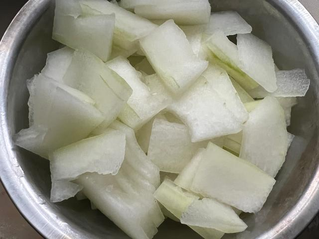
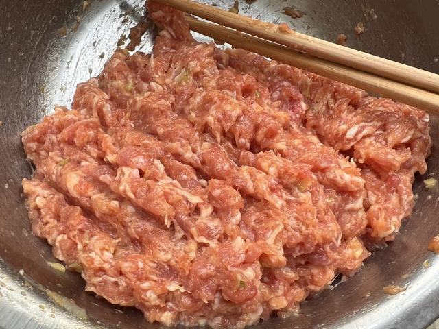
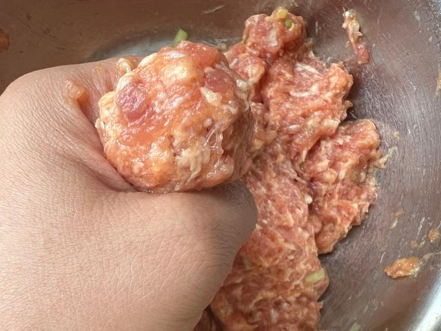
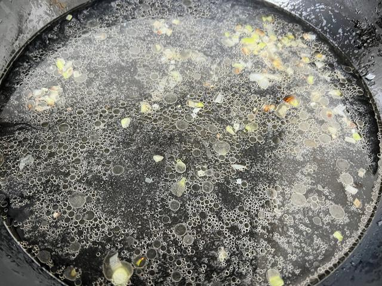
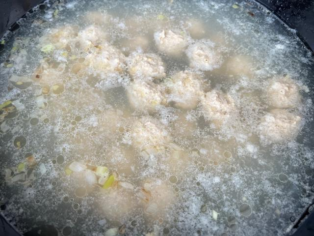
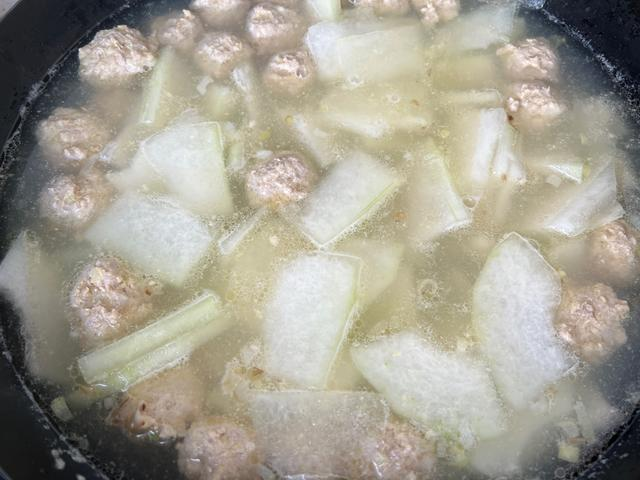
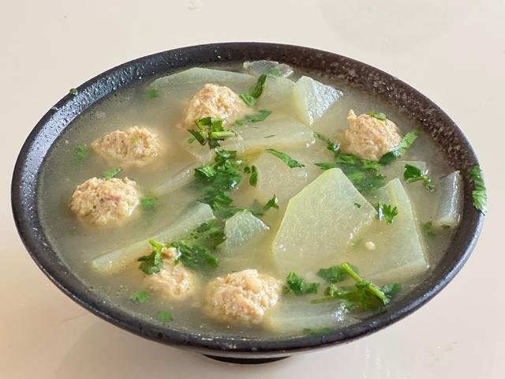

冬瓜丸子汤
一碗清汤，学会“汆丸子不散”。
这一课练的是手感：肉馅要搅到上劲、下水时水不能太滚、下完别急着翻。丸子完整、汤色清亮，这关就算过了。

01 · 本课目标
为什么用它收尾？
前两课你练会了炒；这一课换一种加热方式——“水煮”。它不需要一直盯着锅，反而适合新手慢慢来。
本课记住一句话：丸子下锅时水只是“响边冒小泡”，不是大滚；全部下完先等 1 分钟，让丸子自己定型，再轻轻推。
02 · 用料
买这些就够了
肉末选“前腿肉”或带一点肥的猪肉末，太瘦的肉馅做出来容易柴。
白胡椒粉约 1/4 小勺 白胡椒粉去腥提鲜，是汤的灵魂。
还需要：一口汤锅、一个大碗、一双筷子、一把小勺。想更省事可以在超市直接买“肉馅”，回家自己调味。
03 · 跟着做
七步，从备料到上桌
顺序很重要：先调肉馅再烧水，这样肉馅有足够时间“醒一醒”，更不容易散。
第一段 · 备料（约 8 分钟）
-
STEP 备菜 · 约 3 分钟
冬瓜去皮切薄片
冬瓜去皮去瓤，切成约 0.5 厘米厚的薄片；切太厚不容易熟，切太薄煮一会儿就化了。
看到这样算对：冬瓜片厚度均匀，每片都能透光但不会一夹就断。

-
STEP 调馅 · 约 4 分钟
调肉馅，朝一个方向搅到上劲
肉末放进大碗，加姜末、葱白末、1/3 小勺盐、白胡椒粉、淀粉和 1 汤匙清水，用筷子始终朝一个方向画圈搅打约 2 分钟。
看到这样算对：肉馅从松散发黏变成“整团跟着筷子走”，提起来不容易掉；如果还是散的，再加半勺水继续搅。

-
STEP 挤丸 · 约 2 分钟
先把丸子挤好，放在抹了油的盘上
手掌和勺子抹一点油防粘。抓一把肉馅从虎口挤出一个圆球，用小勺刮下来放在盘上，直到全部挤完。
看到这样算对：丸子圆润、大小接近、放在盘上不变形；挤到一半肉馅开始变干，就再加一小勺水重新搅匀。

第二段 · 煮汤（约 15 分钟）
-
STEP 烧水 · 约 3 分钟
水烧到“响边”，再转小火
汤锅加约 1.2 升水，放姜片，大火烧到锅边开始冒小泡、发出轻微响声（还不到大滚），转小火。
看到这样算对：水面只有锅边有小泡，中间还是平静的。这个水温下丸子不会散。

-
STEP 下丸子 · 约 2 分钟
贴着水面下丸子，下完先别搅
用小勺把丸子轻轻贴着水面放进去，一圈圈下完。保持小火，先等 1 分钟让丸子定型，再用锅铲背轻轻推一下防粘底。
看到这样算对：丸子下水后没有立刻散开，1 分钟后表面变白、能轻轻推动；水始终没有大滚。

-
STEP 撇沫下瓜 · 约 6 分钟
撇去浮沫，下冬瓜
转中火把汤烧开，用勺撇掉表面的灰色浮沫；然后放入冬瓜片，中火煮 5–6 分钟，到冬瓜变半透明。
看到这样算对：汤色清亮不是白浊；冬瓜边缘透明、用筷子能轻松夹断，丸子已经全部浮起。

-
STEP 调味 · 约 1 分钟
调味后关火，撒葱花上桌
加剩下的盐和白胡椒粉，尝一口汤，淡了再补。关火，撒葱花。喜欢香油的可以滴 1–2 滴，不喜欢就省略。
看到这样算对：汤入口清甜、有肉香，丸子咬开是嫩的而不是柴的，冬瓜已经软糯但没化。

04 · 翻车急救站
丸子汤的四类“事故”
丸子散、汤混浊都是新手必经的过程，别急着倒，先看下面。
丸子下锅就散了
为什么：肉馅没搅上劲，或水开得太猛，或下锅后马上搅动。
现在怎么办：立刻转小火让水安静，用漏勺轻轻捞起还成块的肉；已经散成肉末的部分别去捞，汤照样能喝，只是少了丸子。
下次避免：肉馅搅到“整团跟着筷子走”；水只烧到响边；下完后等 1 分钟再推。
丸子发柴，像在吃瘦肉渣
为什么：肉末太瘦，或者搅打时没加水。
现在怎么办：这锅先喝完，记住口感；下次选带一点肥的前腿肉，并在肉馅里加一勺水搅到发黏。
下次避免：搅打时如果感觉肉馅干、阻力大，就少量补水，不要一次加多。
汤混浊，像煮了一锅粥水
为什么：丸子在大滚的水里下锅，或浮沫没有及时撇掉。
现在怎么办：调小火保持水面不滚，轻轻撇掉浮沫；后面的汤会慢慢变清，不要再加冷水“压滚”。
下次避免：水响边就转小火下丸子，烧开后第一时间撇浮沫。
冬瓜化了，或还硬心
为什么：切太薄容易化；切太厚又没煮熟就关火了。
现在怎么办：化了的冬瓜不影响味道，就当冬瓜蓉汤喝；还硬心就再中火煮 2–3 分钟。
下次避免：统一切 0.5 厘米厚，用筷子能夹断再调味关火。
05 · 通关标准
怎么算“学会了”？
这一关过了，你的“两菜一汤”路线就完整了。
-
1
丸子完整不散 捞起来是一个圆球，不是一锅肉末汤。
-
2
汤色清亮 不是白浊的“粥水”，能看清碗底的冬瓜。
-
3
冬瓜软糯但没化 筷子能夹断，碗里还看得到冬瓜片。
-
4
味道清淡有鲜味 能喝出冬瓜的清甜和肉香，而不是只有咸味。